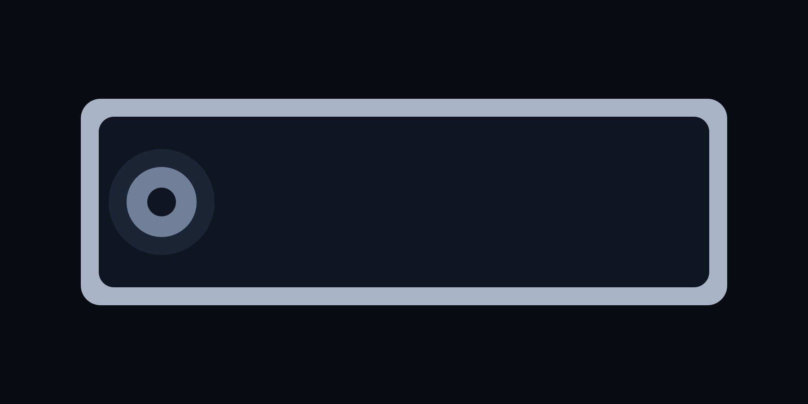

Puce Jarvis A1
CPU 8 cœurs et NPU 32 TOPS pour l’IA locale, la transcription instantanée et le rendu vidéo en direct.
Produit
Structure aluminium-titane, courbes maîtrisées, équilibre en main recalibré. Jarvis One paraît dense, jamais lourd.

CPU 8 cœurs et NPU 32 TOPS pour l’IA locale, la transcription instantanée et le rendu vidéo en direct.
Contraste profond, 2 000 nits en pointe et calibration couleur en sortie d’atelier.
6 ans de correctifs sécurité, batterie remplaçable en centre agréé, pièces critiques disponibles sur le long terme.